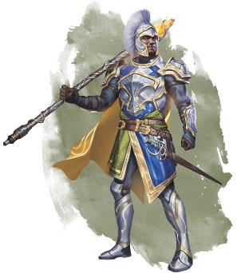

魔法是生活的一部分——也是时尚的一部分。幻纺（出自《艾伯伦：从终末战争中崛起》）通常用于给衣服注入幻术。一个术士可能穿着一件绣有星空的斗篷，或者一个退伍军人的盔甲上可能刻着代表授予他们的服役奖章的发光标志。幻纺的图案表格（见下）可以为你可能在五国的时尚款式中看到的幻术提供灵感。
|
d10 |
幻纺 |
|
1 |
布满繁星的天空，带着月亮与西伯瑞斯之环。 |
|
2 |
看起来像金属的布料——根据款式不同，可能是抛光过的，也可能是生锈的。 |
|
3 |
舞动的火焰从布料中升起。 |
|
4 |
翻腾的雷雨，伴随着周期性闪电。 |
|
5 |
看起来像是由一群蝴蝶或其他昆虫组成的衣服。 |
|
6 |
漩涡状的云或雾。 |
|
7 |
一面在微风中飘扬的国旗。 |
|
8 |
一条龙在衣服上盘旋，偶尔释放出一团团火焰。 |
|
9 |
一个迷宫，里面有一只怪物正在追逐冒险者。 |
|
10 |
萨恩的天际线，上面有一辆正在移动的迷你空中客车。 |
类似地，变幻织衣（也出自《艾伯伦：从终末战争中崛起》，即“百变外套”）允许玩家在多种服装之间变换他们的服装。例如，你可能会在一套旅行服装和一件闪闪发光的长袍之间切换，只需打个响指。《探秘艾伯伦》讨论了魔法易容——你可以去找一个魔匠美容师，在你的外观上添加魔法细节。尤其是在安黛尔，你可以看到人们有发光的眼睛，金属般的头发，或其他明显是魔法产物的装饰细节。
魔法强化并不只适用于平民服装。毕竟，科瓦雷刚结束了那场延续了几十年的战争不到两年时间，当时无论男女都在五国的军队中服役。战争时期的潮流往往优先考虑能够灵活行动的实用性的服装；当你离前线越近，你就越需要为各种事情做好准备。尽管一些贵族可能会接受限制行动的时尚衣服来表达一种观点——“我的长袍表明我不打算参与战斗，或者即使我要去战斗，那也会是魔法，而不是肌肉”——但这些都是例外。
即使在战争结束后，盔甲（尤其是轻甲）仍然是日常生活和时尚的一部分。皮甲和镶嵌皮甲可以设计得既时尚又舒适，许多退役的士兵穿着经过改装的服役盔甲。你可以把这想象成西部片里的大镖客，带着一把手枪意味着你是个能解决缠上自己事的人，但这不会立刻引来警戒。所以，虽然（穿着）重甲确实会引起人们的注意，但人们也不会对穿着轻甲的人视而不见。
《龙与地下城》中盔甲的名称是很随意的。一个更复杂的游戏系统可能会探讨链甲与刚性盔甲的优缺点，但第五版让它处在一个简单的状态。从游戏机制上讲，不同类型的护甲是根据金属的存在（或缺失）、重量、AC、隐匿劣势以及审查你的人能够识别这些东西而区分的。其他的所有方面都是背景故事。
换句话说，你没有理由不能说多达兰氏族的矮人生产出了异常结实且轻便的“链甲”，其数据恰好与胸甲的数据相同——这让一个中型盔甲熟练度的角色能够穿上具有重型盔甲风格的盔甲（译注：也就是说，这只是一套外观长得像链甲的胸甲，依旧使用胸甲的数据）。你的“胸甲”不一定是真正的胸甲，只要有人看到它就能认出它的品质。这同样适用于任何装甲，无论是镶有铆钉的皮革还是厚重的钢板，只要它使用相同的数据，并且能够被任何可能需要知道你在战斗中的保护程度的人识别出来，你就可以用任何你想要的风格来描述它。
所有这些都回到了这样一个观点，即艾伯伦的人们使用着我们认为是中世纪的工具，但并不意味着他们就是中世纪的人。你可以调整从弩到板甲的所有东西的外观，使它们的设计感觉更现代或更具文化特色。不要把自己限制在盔甲的官方名称上，只要你在逻辑上保持它的数据和易识别性便可。
在终末战争开始之前，五国的士兵都在伽利法联合军队服役。在长达一个世纪的战争中，每个国家都在努力区分自己的士兵，并改进他们的战争工具，风格也随之演变。展示国家实力的精锐部队尤其如此：坎纳斯派出了五国中最精锐的重装步兵，而安黛尔人则更多地依靠奥术火力和较轻型的盔甲。
然而，在整个战争期间，五国中一般士兵的制服依旧十分相似。以下是当今常见盔甲的概述：
轻型盔甲：通常包括皮革大衣或厚皮束腰外衣。并加以厚重的皮革手套和靴子，或为了更好的防护，再加上金属胫甲和臂甲。
中型盔甲：使用相同的基础——一件皮革外衣或背心——并配有坚固的金属头盔和胸甲。普通士兵的胸甲既便宜又笨重，实际上使用了鳞甲的数据（包括使隐匿检定获得劣势），而军官和精锐部队的胸甲（相较于普通士兵）设计更精细、更轻，正常使用胸甲的数据。
重型盔甲：在不同的国家之间有很大的区别。例如，布鲁兰的板条甲是将胸甲和一层链甲结合在一起，而坎纳斯的板条甲则是轻型板甲。
这些反映了五国中普通士兵的盔甲，但精锐部队、雇佣军、地方民兵和其他部队会使用不同的风格和材料。如果你扮演的是一名士兵背景的游侠，并且想要穿着兽皮甲，你可以说这是一种独特的布鲁兰“棱皮龟斥候leatherback scouts”风格。除此之外，无论是在盔甲还是平民服装上，每个国家都有自己独特的时尚方式。以下是一些需要记住的风格要点。

魔法是五国日常生活的一部分，这一点在安黛尔尤为明显。安黛尔人经常使用幻纺glamerweave或变形系法术来为衣服和盔甲增添光彩，安黛尔骑士的盔甲上可能会有闪烁的星星或阴沉的风暴云。也就是说，与重甲和蛮力相比，安黛尔人更喜欢优雅、机动性和技巧。安黛尔的舞杖者——轻甲，穿着时髦，挥舞着魔杖和长剑——比他们的重甲骑士更出名。
布鲁兰人是务实的，他们没有在战场上脱颖而出的强烈愿望。由于他们卓越的工业能力，他们能够比他们的对手派出更多的穿着中型装甲的士兵；由于大规模生产，布鲁兰的士兵拥有几乎相同的装备。可以肯定的是，布鲁兰的士兵（对盔甲）有加入自己的个人风格，但不同于安黛尔人的品味，这些个人风格更多与舒适性和功能性有关。
塞尔一直以“塞尔理解the Cyran Appreciation”而闻名。那些塞尔人说，他们看到了周围国家最好的方面，并将这些元素结合起来创造出了新的东西；另一些人则说，他们塞尔人只是在盗用，而非创新。无论如何，塞尔的盔甲和服装结合了布鲁兰的的实用性和一些安黛尔的品味。塞尔的重型装甲模仿了坎纳斯的轻型板甲设计，虽然并没有哥特式风格。斗篷和披肩是塞尔时尚的重要组成部分，塞尔的士兵们有时会因他们独特的制式斗篷而被称为“绿斗篷Greencloaks” 。（译注：布鲁兰有一支精锐部队名为“红斗篷Redcloak”，又译为“红衣军”）
与安黛尔的华丽感不同，坎纳斯的时尚更强调力量感。这个国家的整体风格既有哥特式风格，也有军事风格，其盔甲和头盔是为了恐吓敌人而设计的。坎纳斯人一直是五国中最优秀的盔甲工匠，无论是在战场上还是在战场外，盔甲——尤其是重型盔甲——在这里都比其他国家更常见。他们的盔甲通常是充满艺术性的。除了他们的臭名昭著的骸骨骑士，你还可以期待哥特式风格或与家族徽章上的细节。坎纳斯的旗帜是黑色和红色的，这两种颜色在他们的时尚中很常见。
瑟雷恩是五国中最务实、最不做作的国家。圣殿骑士可能穿着重甲，但一般的农民民兵则依靠轻甲和弓箭。轻甲在日常生活中很常见，不会引人注目；而魔法易容和幻纺glamerweave是很罕见的。瑟雷恩民兵没有统一的制服，但银焰的追随者通常会展示他们信仰的象征，通常是通过吊坠、胸针或者彩绘的图案。
在科瓦雷的其他地方，盔甲和时尚有时会受到五国潮流的影响，但每种文化的盔甲都强烈反映了自己的传统。摩洛领拥有强烈的链甲传统，多达兰双层链甲Doldarun
double-chain使用板甲的数据（译注：多达兰Doldarun是摩洛领的一个矮人氏族）。每个拉扎尔联邦的公国都有自己独特的风格；然而，作为那些大部分时间都在海上度过的人来说，他们倾向于穿着不会妨碍游泳的轻甲。达贡人在日常生活中穿着盔甲是很常见的；每个氏族都有自己的风格，但通常是中甲，特别是不同形式的鳞甲；和坎纳斯一样，达贡人的武器和盔甲通常是为了恐吓敌人而设计的。埃鲁登原野的人们使用从超自然生物身上获取的天然材料，使他们的盔甲比人们想象的更强大；因此，相当于板甲的埃鲁登盔甲可以用来自恶魔制造的熊的皮革和骨头制成。与此同时，吉拉哥的人们不喜欢在日常生活中穿盔甲——毕竟，感谢真知社制度，他们并不害怕暴力——尽管轻甲可以被融入休闲时尚。